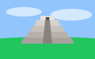
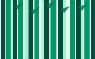

An afternoon beneath the ocean surface
A jellyfish drifts through deep blue water at the aquarium. We pause by the glass and watch its delicate shape catch the light. A quiet afternoon can hold a surprising number of small discoveries.
Read more →A journal of small discoveries and faraway places
A jellyfish drifts through deep blue water at the aquarium. We pause by the glass and watch its delicate shape catch the light. A quiet afternoon can hold a surprising number of small discoveries.
Read more →
Morning light falls across the stone steps and the surrounding grass. The paths are still quiet, and the air is cool. We take our time, noticing the details that make this place memorable.
Read more →A narrow road leads beyond the edge of town toward distant mountains. We stop beside a field to watch the clouds move. With no fixed destination, the journey becomes the best part of the day.
Read more →Paper lanterns brighten a quiet street as evening arrives. Warm light spills from open doorways, and conversations drift through the air. We stay for one more walk before heading home.
Read more →
Tall trees frame a narrow trail through the woods. Sunlight reaches the ground in small patches, changing with every step. We follow the path slowly and listen to the leaves moving overhead.
Read more →